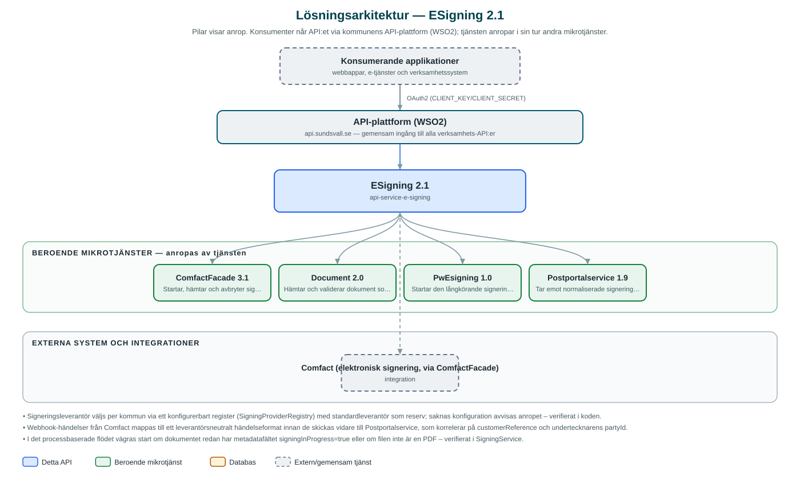

ESigning
Gemensam ingång för elektronisk signering av dokument – startar, följer upp och avbryter signeringsärenden hos den signeringsleverantör som är konfigurerad för kommunen.
Om API:et
ESigning ger kommunens verksamhetssystem ett leverantörsoberoende sätt att få dokument elektroniskt signerade. Anroparen startar ett signeringsärende med dokument och undertecknare, och tjänsten väljer signeringsleverantör utifrån vilken kommun anropet gäller – idag Comfact via kommunens ComfactFacade-tjänst. Svaret innehåller ärende-id, status och signeringslänkar till undertecknarna.
Signeringsärenden kan hämtas med aktuell status, giltighetstid och – när alla undertecknat – det signerade dokumentet. Pågående ärenden kan avbrytas. När signeringsleverantören rapporterar händelser via webhook normaliserar tjänsten dem till ett leverantörsneutralt format och vidarebefordrar dem till Postportalservice, som korrelerar händelsen mot rätt utskick och mottagare.
Tjänsten har även ett äldre processbaserat flöde där signering av dokument som lagras i kommunens Document-tjänst startas som en långkörande process i process-tjänsten PwEsigning. Innan processen startas kontrolleras att dokumentet finns, att det är en PDF och att ingen signering redan pågår.
Det här gör API:et
- Starta signeringsärende – Signeringsärenden startas med dokument och undertecknare; svaret innehåller ärende-id, status och signeringslänkar.
- Leverantörsoberoende gateway – Signeringsleverantör väljs per kommun via konfiguration; idag stöds Comfact via ComfactFacade.
- Status och signerat dokument – Ärenden kan hämtas med status och giltighetstid, och det signerade dokumentet returneras när signeringen är klar.
- Avbryt signering – Pågående signeringsärenden kan avbrytas hos leverantören.
- Webhook och händelsevidarebefordran – Händelser från Comfact tas emot via webhook, normaliseras och vidarebefordras till Postportalservice.
- Processbaserad signering – Ett äldre flöde startar signering av dokument i Document-tjänsten som en långkörande process via PwEsigning.
API-dokumentation
API:ets samtliga resurser, parametrar och datamodeller finns beskrivna i en OpenAPI-specifikation som är hämtad ur källkodsförrådet. Den kan utforskas interaktivt i Swagger UI eller laddas ner som YAML.
Teknisk dokumentation
Nedan beskrivs hur tjänsten är uppbyggd, vilka andra tjänster den anropar och vad som krävs för att driftsätta den. Informationen är härledd ur källkoden och dess konfiguration på GitHub.
Arkitektur

API:et är en mikrotjänst (Java 25, Spring Boot via kommunens gemensamma tjänsteplattform dept44 (8.0.8), byggd med Maven). Konsumenter når tjänsten via kommunens gemensamma API-plattform (WSO2) på api.sundsvall.se – tjänsten anropas aldrig direkt. Tjänsten anropar i sin tur andra mikrotjänster i kommunens tjänstelandskap. Övriga integrationer som förekommer i koden: Comfact (elektronisk signering, via ComfactFacade).
Teknikstack
- Språk: Java 25
- Ramverk: Spring Boot via kommunens gemensamma tjänsteplattform dept44 (8.0.8), byggd med Maven
- Övrigt: Resilience4j (circuit breakers och retry mot beroende tjänster), Feign-klienter; ingen egen databas – tillståndet ligger hos leverantören och i Postportalservice
Beroenden till andra mikrotjänster
Tjänsten anropar följande mikrotjänster. Versionerna är hämtade ur källkodens integrationsklienter.
| Tjänst | Version | Användning |
|---|---|---|
| ComfactFacade | 3.1 | Startar, hämtar och avbryter signeringsärenden hos signeringsleverantören Comfact. |
| Document | 2.0 | Hämtar och validerar dokument som ska signeras i det processbaserade flödet. |
| PwEsigning | 1.0 | Startar den långkörande signeringsprocessen i det processbaserade flödet. |
| Postportalservice | 1.9 | Tar emot normaliserade signeringshändelser och korrelerar dem mot utskick och mottagare. |
Konfiguration och driftsättning
- application.yml med URL och OAuth2-klientuppgifter för ComfactFacade, Document, PwEsigning och Postportalservice
- Signeringsleverantör konfigureras per kommun (byMunicipalityId) med en standardleverantör som reserv
- Ingen databas behöver konfigureras – tjänsten är tillståndslös
- Anrop görs per kommun – municipalityId ingår i alla API-vägar
Noterbart ur källkoden
- Signeringsleverantör väljs per kommun via ett konfigurerbart register (SigningProviderRegistry) med standardleverantör som reserv; saknas konfiguration avvisas anropet – verifierat i koden.
- Webhook-händelser från Comfact mappas till ett leverantörsneutralt händelseformat innan de skickas vidare till Postportalservice, som korrelerar på customerReference och undertecknarens partyId.
- I det processbaserade flödet vägras start om dokumentet redan har metadatafältet signingInProgress=true eller om filen inte är en PDF – verifierat i SigningService.
- Tjänsten saknar egen databas och lagrar inget tillstånd själv.
Källkod
Källkoden är öppen och finns hos Sundsvalls kommun på GitHub. I källkodsförrådet finns även instruktioner för att klona, konfigurera och starta tjänsten i egen miljö.